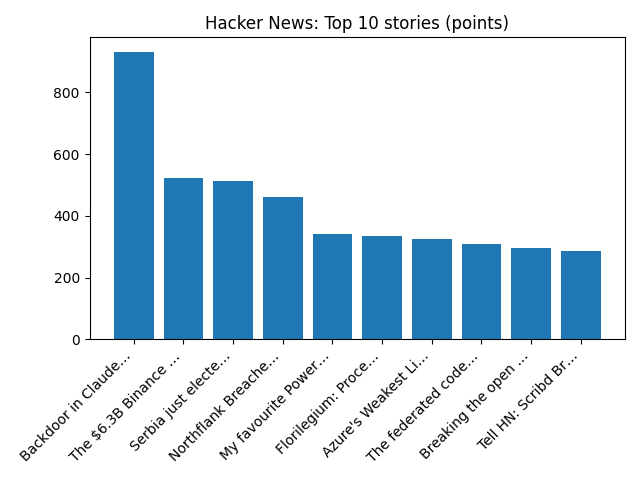

Starved residents of Russian-occupied Oleshky return to Ukraine during a rare local ceasefire - Reuters
Reuters — Headlines (Google News)
YOUR DAILY INTELLIGENCE BRIEF · 2026-10-31
Global watch: Starved residents of Russian-occupied Oleshky return to Ukraine during a rare local ceasefire - Reuters, Evacuees from Russia-occupied city where residents ate weeds arrive in Ukraine.
Northern Virginia: 'I'm going to be priced out': Affordability, constitutional amendments drive Virginia voters to the polls - WUSA9, Northern Virginia high school football scores for Oct. 30 games - InsideNoVa.

Global coverage includes Starved residents of Russian-occupied Oleshky return to Ukraine during a rare local ceasefire - Reuters; Evacuees from Russia-occupied city where residents ate weeds arrive in Ukraine; More than 5,000 die from Ebola in DR Congo's deadliest outbreak. Local coverage includes 'I'm going to be priced out': Affordability, constitutional amendments drive Virginia voters to the polls - WUSA9; Northern Virginia high school football scores for Oct. 30 games - InsideNoVa.

Agog
https://en.wikipedia.org/wiki/Agog
Runs so far today: 3